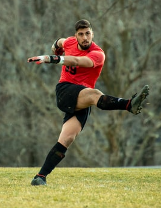

.png)
Quienes somos
Antes de empezar, nos gustaría presentarnos. Watch Soccer es un proyecto que tiene como finalidad promover la pasion por el fútbol y ofrecer a los usuarios opciones para disfrutar del mejor espectáculo del mundo. Somos un grupo de fanáticos y apasionados del Futbol, amantes del análisis en el deporte, tanto en video como de datos.
ContáctenosEnalces de interés

Posiciones de los jugadores de fútbol
PosicionesEl fútbol con coronavirus y en cuarentena
Futbol y cuarentenaDiferencias entre fútbol femenino y masculino
Futbol femenino
Las 21 mejores películas y series sobre fútbol
Futbol y cine¿Que dicen de nosotros?

Martha Arévalo
Muy divertido y bien organizado
La experiencia ha sido muy buena, gran organización y diversión en todo momento. Al ser un grupo de trabajo, se adaptaron muy bien a nuestras necesidades, idioma y materiales añadidos en el juego. Muy recomendable!
Carlos Rodríguez
Mucho más que fútbol
¡Innovador y original! Las actividades que ofrecen son originales. La programación es muy confiable.